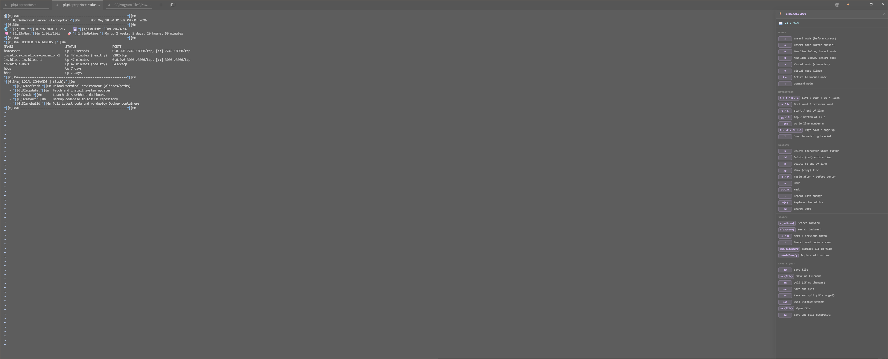
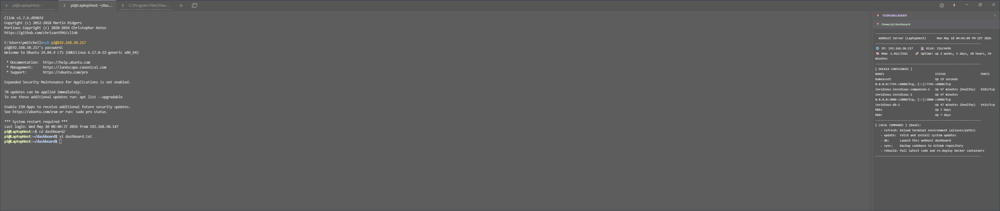
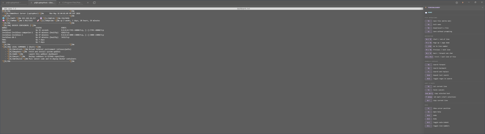

A Tabby Terminal plugin adding a live, context-aware companion panel to SSH sessions that shows editor cheat sheets and remote host telemetry dynamically.



Monitors shell execution in real-time. Instantly displays cheat sheets when entering vim, vi, or nano, then returns to system status when exiting.
Utilizes hook script generated OSC escape sequences embedded in terminal output stream. No secondary open network ports or polling required.
Fully configurable via Tabby settings. Create custom keybind cheat sheets triggered by specific CLI commands like docker, git, or python.
Renders live, customizable status data from remote hosts by parsing ~/dashboard/dashboard.txt from SSH session nodes.
# One-Line Remote Shell Integration Hook Setup
curl -sSL https://raw.githubusercontent.com/pmitchell-dev/TerminalBuddy/main/shell-integration/install.sh | bash
# Reload remote bash profile
source ~/.bashrc
| Component | Implementation | Benefit |
|---|---|---|
| Communication Channel | OSC Escape Sequences (ANSI code 7701) | Zero-port telemetry across NATs and jumpboxes |
| Tabby Plugin Core | TypeScript & Tabby API Providers | Seamless integration with terminal session instances |
| UI View Controller | Angular Component Architecture | Responsive state binding and instant cheat-sheet switches |
| Shell Interception Hook | Bash DEBUG trap & Zsh preexec hooks |
Minimal overhead command detection and status serialization |